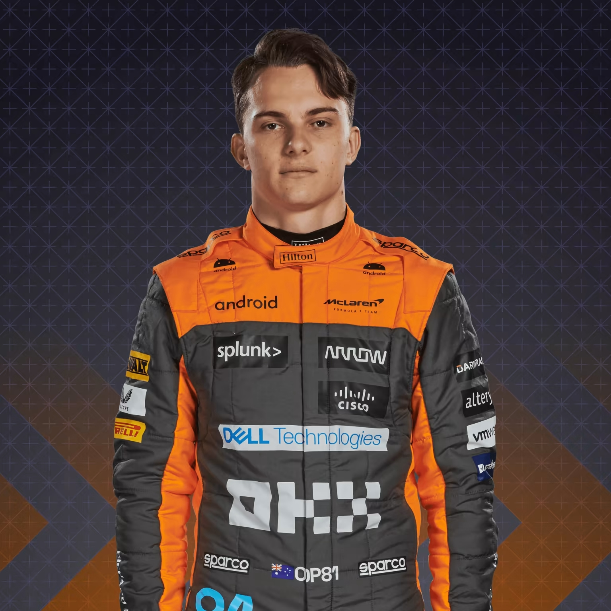
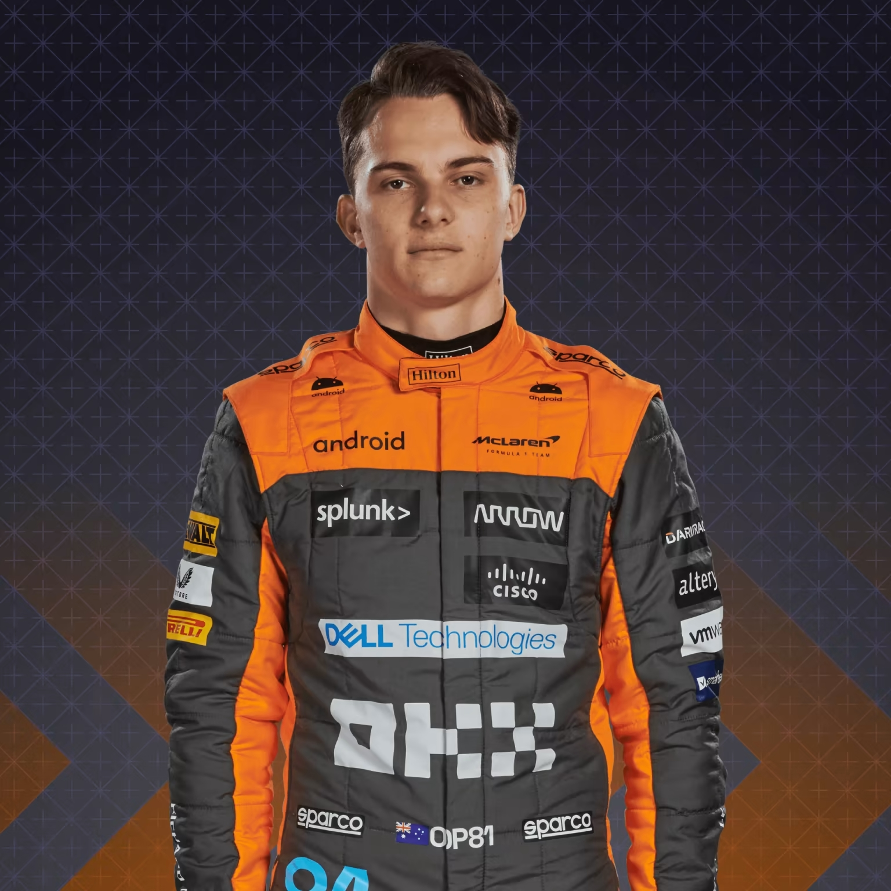

McLaren to zespół Formuły 1 z siedzibą w Woking w Wielkiej Brytanii. Zespół ten jest jednym z najbardziej utytułowanych w historii F1, mając na swoim koncie osiem tytułów mistrza świata konstruktorów oraz 12 tytułów mistrza świata kierowców. McLaren został założony w 1963 roku przez Bruce'a McLarena i stał się jednym z najbardziej znanych i szanowanych zespołów w Formule 1. W ciągu swojej długiej historii McLaren współpracował z wieloma legendarnymi kierowcami, takimi jak Ayrton Senna, Alain Prost, Mika Hakkinen, Lewis Hamilton czy Fernando Alonso. W ostatnich latach McLaren przeszedł kilka zmian, a w 2021 roku zespół powrócił do Mercedes-Benz jako dostawcy silników po 7 latach z Hondą i Renault. W sezonie 2021 zespół był prowadzony przez Lando Norrisa i Daniela Ricciardo, a ich bolid, McLaren MCL35M, był bardzo konkurencyjny i pozwolił na zdobycie trzeciego miejsca w klasyfikacji konstruktorów.
Lando Norris to młody kierowca brytyjski, który dołączył do zespołu McLaren w sezonie 2019. W swoim debiutanckim sezonie zespołowym Norris zrobił duże wrażenie, pokazując wiele umiejętności i zdolności, co zaowocowało zajęciem siódmego miejsca w klasyfikacji generalnej kierowców. W kolejnym sezonie poprawił swoje osiągnięcia i zajął czwarte miejsce w klasyfikacji generalnej, co było najlepszym wynikiem McLarena od 2012 roku. W sezonie 2021 Norris kontynuował swoją dobrą formę, a jego wyjątkowy talent i nieustępliwość na torze przyniosły mu 3 podium i piąte miejsce w klasyfikacji generalnej kierowców. Drugim kierowcą McLarena jest Oscar Piastri, który dołączył do zespołu w sezonie 2023. Oscar jest jednym z najbardziej utytułowanych kierowców w stawce. Oscar jest znany z umiejętności wykorzystywania każdej szansy, a jego styl jazdy pełen jest pewności siebie i pozytywnego podejścia.
 
Bolid Mclarena w Formule 1 na sezon 2023 to MCL35M. M oznacza McLaren, C to Carbon, a L to Lightweight. 35M to z kolei nawiązanie do nazw poprzednich samochodów wyścigowych marki. Bolid został zaprojektowany z myślą o maksymalnej aerodynamice i wydajności, a także o minimalizacji oporu powietrza. MCL35M jest napędzany przez silnik Mercedesa i wyposażony w opony Pirelli. Bolid Mclarena wyróżnia się charakterystycznym, pomarańczowym kolorem z białymi elementami oraz logo sponsora, którym jest firma British American Tobacco. Pojazd jest także wyposażony w innowacyjny system kamer i monitoringu, dzięki któremu kierowca może monitorować każdy aspekt swojej jazdy, włącznie z ustawieniami kierownicy czy pracy silnika. MCL35M jest jednym z najnowocześniejszych bolidów w Formule 1, a zespół Mclaren liczy na to, że dzięki niemu uda się osiągnąć sukcesy w nadchodzącym sezonie.